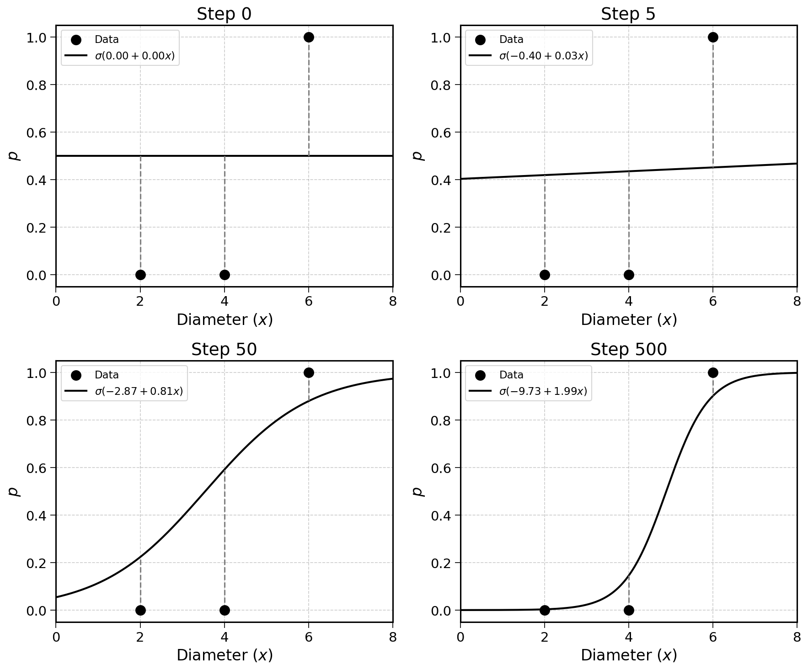

27 Fitting a Logistic Regression
In this chapter, we will fit a logistic regression with gradient descent. This will look familiar.
As a reminder, the process to train a linear regression was the following:
- Start with a random choice of \(\mathbf{w}_0\)
- Compute the gradient vector \(\nabla \text{MSE}(\mathbf{w})\)
- Update: \(\mathbf{w}_{t+1} = \mathbf{w}_t - \text{learning rate} \times \nabla \text{MSE}(\mathbf{w}_t)\)
- Repeat until convergence: \(\mathbf{w}_{t+1} \approx \mathbf{w}_t\)
There are two main differences between training a linear and a logistic regression.
27.1 The Model Formula
The linear regression formula is:
\[ \hat{\mathbf{y}} = \mathbf{X}\mathbf{w} \]
The logistic regression adds a sigmoid transformation to squash the output into the \([0, 1]\) range:
\[ \hat{\mathbf{y}} = \sigma(\mathbf{X}\mathbf{w}) \]
Where \(\sigma\) is the sigmoid function introduced in the logistic regression formula chapter:
\[ \sigma(z) = \frac{1}{1 + e^{-z}} \]
With \(z = \mathbf{X}\mathbf{w}\).
27.2 The Loss Function
For linear regression, we minimised the mean squared error:
\[ \text{MSE}(\mathbf{w}) = \frac{1}{n} (\mathbf{X}\mathbf{w} - \mathbf{y})^T (\mathbf{X}\mathbf{w} - \mathbf{y}) \]
For logistic regression, we minimise the cross-entropy loss introduced in the calibration chapter:
\[ \text{CE}(\mathbf{w}) = -\frac{1}{n} \sum_{i=1}^{n} \left[ y_i \ln(p_i) + (1 - y_i) \ln(1 - p_i) \right] \]
Where \(p_i = \sigma(\mathbf{x}_i \mathbf{w})\) is the predicted probability for observation \(i\).
Apart from these two differences, the idea of minimising the loss with gradient descent stays the same. The one tricky mathematical part will be to compute the gradient of the cross-entropy loss with regards to the weight vector \(\mathbf{w}\).
This is the gradient of the cross-entropy loss function:
\[ \nabla \text{CE}(\mathbf{w}) = \frac{1}{n} \mathbf{X}^T (\hat{\mathbf{y}} - \mathbf{y}) \]
Where \(\hat{\mathbf{y}} = \sigma(\mathbf{X}\mathbf{w})\) is the vector of predicted probabilities.
The full derivation can be found in the appendix. It is trickier than computing the MSE gradient, but still doable with the chain rule. I encourage the adventurous reader to give it a try.
Does this look familiar? It is remarkably similar to the MSE gradient from the multiple linear regression chapter:
\[ \nabla \text{MSE}(\mathbf{w}) = \frac{2}{n} \mathbf{X}^T (\hat{\mathbf{y}} - \mathbf{y}) \]
In both cases, the gradient is the transpose of the feature matrix multiplied by the vector of errors. The sigmoid function, despite its complexity, leads to a very elegant gradient.
27.3 Example
Let’s now use this gradient to fit a logistic regression on a simple dataset. Consider three tumour observations:
| Observation | Diameter (\(x\)) | Malignant (\(y\)) |
|---|---|---|
| 1 | 2 | 0 |
| 2 | 4 | 0 |
| 3 | 6 | 1 |
The feature matrix (with a column of \(1\)s for the intercept) and target vector are:
\[ \mathbf{X} = \begin{pmatrix} 1 & 2 \\ 1 & 4 \\ 1 & 6 \end{pmatrix} \quad \text{and} \quad \mathbf{y} = \begin{pmatrix} 0 \\ 0 \\ 1 \end{pmatrix} \]
The gradient descent steps are:
- Start with a random guess: \(\mathbf{w}_0 = (0, 0)\)
- Compute the predicted probabilities \(\hat{\mathbf{y}} = \sigma(\mathbf{X}\mathbf{w})\)
- Compute the gradient: \(\nabla \text{CE}(\mathbf{w}) = \frac{1}{n} \mathbf{X}^T (\hat{\mathbf{y}} - \mathbf{y})\)
- Update: \(\mathbf{w}_{t+1} = \mathbf{w}_t - \text{learning rate} \times \nabla \text{CE}(\mathbf{w}_t)\)
- Repeat until convergence
We will use a learning rate of \(0.5\).
Step 1
Starting with \(\mathbf{w}_0 = (0, 0)\), compute \(z_i = \mathbf{x}_i^T \mathbf{w}\) and \(p_i = \sigma(z_i)\):
| Obs. | \(z_i = 0 \times 1 + 0 \times x_i\) | \(p_i = \sigma(z_i)\) | \(y_i\) | \(p_i - y_i\) |
|---|---|---|---|---|
| 1 | 0 | 0.500 | 0 | 0.500 |
| 2 | 0 | 0.500 | 0 | 0.500 |
| 3 | 0 | 0.500 | 1 | \(-0.500\) |
When all weights are zero, the sigmoid outputs \(\sigma(0) = 0.5\) for every observation. This is not very useful.
Computing the gradient:
\[\begin{aligned} \nabla \text{CE}(\mathbf{w}_0) &= \frac{1}{3} \mathbf{X}^T (\hat{\mathbf{y}} - \mathbf{y}) \\ &= \frac{1}{3} \begin{pmatrix} 1 & 1 & 1 \\ 2 & 4 & 6 \end{pmatrix} \begin{pmatrix} 0.500 \\ 0.500 \\ -0.500 \end{pmatrix} \\ &= \frac{1}{3} \begin{pmatrix} 1 \times 0.5 + 1 \times 0.5 + 1 \times (-0.5) \\ 2 \times 0.5 + 4 \times 0.5 + 6 \times (-0.5) \end{pmatrix} \\ &= \frac{1}{3} \begin{pmatrix} 0.500 \\ 0.000 \end{pmatrix} = \begin{pmatrix} 0.167 \\ 0.000 \end{pmatrix} \end{aligned}\]
Updating the weights:
\[ \mathbf{w}_1 = \begin{pmatrix} 0 \\ 0 \end{pmatrix} - 0.5 \times \begin{pmatrix} 0.167 \\ 0.000 \end{pmatrix} = \begin{pmatrix} -0.083 \\ 0.000 \end{pmatrix} \]
The intercept decreased slightly (making the baseline probability lower), while the slope stayed at zero.
Step 2
With \(\mathbf{w}_1 = (-0.083, 0.000)\):
| Obs. | \(z_i = -0.083 + 0 \times x_i\) | \(p_i = \sigma(z_i)\) | \(y_i\) | \(p_i - y_i\) |
|---|---|---|---|---|
| 1 | \(-0.083\) | 0.479 | 0 | 0.479 |
| 2 | \(-0.083\) | 0.479 | 0 | 0.479 |
| 3 | \(-0.083\) | 0.479 | 1 | \(-0.521\) |
\[\begin{aligned} \nabla \text{CE}(\mathbf{w}_1) &= \frac{1}{3} \begin{pmatrix} 1 & 1 & 1 \\ 2 & 4 & 6 \end{pmatrix} \begin{pmatrix} 0.479 \\ 0.479 \\ -0.521 \end{pmatrix} \\ &= \frac{1}{3} \begin{pmatrix} 0.438 \\ -0.250 \end{pmatrix} = \begin{pmatrix} 0.146 \\ -0.083 \end{pmatrix} \end{aligned}\]
\[ \mathbf{w}_2 = \begin{pmatrix} -0.083 \\ 0.000 \end{pmatrix} - 0.5 \times \begin{pmatrix} 0.146 \\ -0.083 \end{pmatrix} = \begin{pmatrix} -0.156 \\ 0.042 \end{pmatrix} \]
The slope is starting to become positive. This makes sense: larger tumours should have a higher probability of malignancy.
Exercise 27.1 Continue the gradient descent for two more steps (Steps 3 and 4), starting from \(\mathbf{w}_2 = (-0.156, 0.042)\).
- Compute the predicted probabilities using the sigmoid function.
- Compute the gradient at each step.
- Update the weights using a learning rate of \(0.5\).
Hint: \(\sigma(-0.073) \approx 0.482\), \(\sigma(0.010) \approx 0.503\), \(\sigma(0.094) \approx 0.523\), \(\sigma(-0.196) \approx 0.451\), \(\sigma(-0.150) \approx 0.462\), \(\sigma(-0.105) \approx 0.474\).
Continuing this process for many more iterations, the algorithm converges to weights that produce an S-shaped curve through the data: low probability for small tumours, high probability for large tumours.

At step 0, the model predicts 0.5 for every observation, a flat line. As the algorithm progresses, the sigmoid curve tilts and shifts, assigning lower probabilities to smaller tumours and higher probabilities to larger ones. By step 500, the curve fits the data well.
27.4 Final Thoughts
This chapter concludes the technical exploration of linear and logistic regression. The fitting process for logistic regression follows the same pattern as linear regression:
- Start with random weights
- Compute the gradient of the loss function
- Update the weights in the opposite direction of the gradient
- Repeat until convergence
The key difference is the loss function: cross-entropy instead of the mean squared error. Despite the more complex model formula involving \(e\) and the sigmoid, the gradient simplifies to:
\[ \nabla \text{CE}(\mathbf{w}) = \frac{1}{n} \mathbf{X}^T (\hat{\mathbf{y}} - \mathbf{y}) \]
With this method, you can fit any logistic regression on any dataset.
27.5 Solutions
Solution 27.1. Exercise 27.1
Step 3: \(\mathbf{w}_2 = (-0.156, 0.042)\)
| Obs. | \(z_i = -0.156 + 0.042 \times x_i\) | \(p_i = \sigma(z_i)\) | \(y_i\) | \(p_i - y_i\) |
|---|---|---|---|---|
| 1 | \(-0.156 + 0.084 = -0.073\) | 0.482 | 0 | 0.482 |
| 2 | \(-0.156 + 0.168 = 0.010\) | 0.503 | 0 | 0.503 |
| 3 | \(-0.156 + 0.252 = 0.094\) | 0.523 | 1 | \(-0.477\) |
\[\begin{aligned} \nabla \text{CE}(\mathbf{w}_2) &= \frac{1}{3} \begin{pmatrix} 1 & 1 & 1 \\ 2 & 4 & 6 \end{pmatrix} \begin{pmatrix} 0.482 \\ 0.503 \\ -0.477 \end{pmatrix} \\ &= \frac{1}{3} \begin{pmatrix} 0.508 \\ 0.114 \end{pmatrix} = \begin{pmatrix} 0.169 \\ 0.038 \end{pmatrix} \end{aligned}\]
\[ \mathbf{w}_3 = \begin{pmatrix} -0.156 \\ 0.042 \end{pmatrix} - 0.5 \times \begin{pmatrix} 0.169 \\ 0.038 \end{pmatrix} = \begin{pmatrix} -0.241 \\ 0.023 \end{pmatrix} \]
Step 4: \(\mathbf{w}_3 = (-0.241, 0.023)\)
| Obs. | \(z_i = -0.241 + 0.023 \times x_i\) | \(p_i = \sigma(z_i)\) | \(y_i\) | \(p_i - y_i\) |
|---|---|---|---|---|
| 1 | \(-0.241 + 0.046 = -0.196\) | 0.451 | 0 | 0.451 |
| 2 | \(-0.241 + 0.092 = -0.150\) | 0.462 | 0 | 0.462 |
| 3 | \(-0.241 + 0.138 = -0.105\) | 0.474 | 1 | \(-0.526\) |
\[\begin{aligned} \nabla \text{CE}(\mathbf{w}_3) &= \frac{1}{3} \begin{pmatrix} 1 & 1 & 1 \\ 2 & 4 & 6 \end{pmatrix} \begin{pmatrix} 0.451 \\ 0.462 \\ -0.526 \end{pmatrix} \\ &= \frac{1}{3} \begin{pmatrix} 0.387 \\ -0.405 \end{pmatrix} = \begin{pmatrix} 0.129 \\ -0.135 \end{pmatrix} \end{aligned}\]
\[ \mathbf{w}_4 = \begin{pmatrix} -0.241 \\ 0.023 \end{pmatrix} - 0.5 \times \begin{pmatrix} 0.129 \\ -0.135 \end{pmatrix} = \begin{pmatrix} -0.305 \\ 0.090 \end{pmatrix} \]
The intercept is becoming more negative, while the slope is oscillating but trending positive. This indicates that the algorithm is learning: larger tumours should have a higher probability of malignancy. After many more iterations (or with a smaller learning rate), the weights will converge to their optimal values.